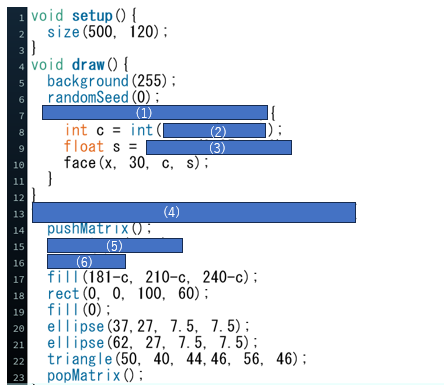
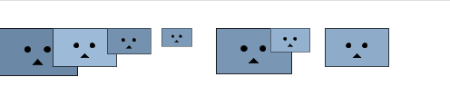

問題のコード
プログラム実行画面
問題文
上図は,様々な色や大きさの顔を表示させるプログラムです.
(1)for文を用いて,繰り返しのプログラムを埋めてください.
ただし,整数型の変数をxとして初期値は0,xが400以下の場合実行し,xが60ずつ増加するようにしてください.
(2)0以上102未満の乱数を生成するプログラムを埋めてください.
(3)0.25以上1.0未満の乱数を生成するプログラムを埋めてください.
(4)整数型の3つのパラメータx,y,cと浮動小数点数型のパラメータsを使ってface()関数を導入してください.
(5)デフォルトの座標系である座標(0,0)を右にxピクセル,左にyピクセル移動させてください.
(6)変数sを使って座標を伸縮させるプログラムを埋めてください.
(2)(3)乱数を生成させる関数 random();
(5)デフォルトの座標系を変更する関数 translate();
(6)座標を伸縮させる関数 scale();
解答欄
(1)for(int x=0; x<=400; x+=60)
(2)random(0,102)
(3)random(0.25, 1.0);
(4)void face(int x, int y, int c, float s)
(5)translate(x, y);
(6)scale(s);
解説欄